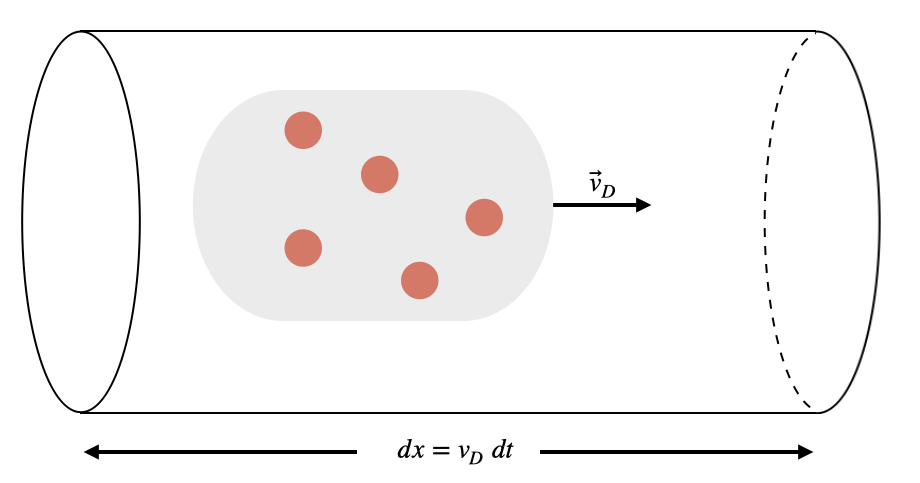

D4.1 Current#
D4.1.1 Current#
An isolated neutral conductor has an equal amount of positive and negative charges distributed such that they are in an equilibrium state, that is, no net electric field produced by these charges exists inside the conductor.
If an external electric field, \(\vec{E}\), is imposed upon the conductor, these charges can move according to this external field. We define the average current as the transport of charges in response to an external electric field, and it is quantified as the amount of charge passing through a cross-section of a conductor per unit time:
The instantaneous current is defined in the limit of \(\Delta t \rightarrow 0\):
We characterize a current as positive in the direction of positive charge flow. NOTE: current is not a vector even though we associate a direction with it. We will see later that the vector object associated with current is the current density.
D4.1.2 Drift Velocity#
A standard conductor has a large number of charges and while all positive charges will experience a net acceleration in the direction of the electric field (and the negative charges a net acceleration in the opposite direction), there is a significant retarded force due to “collisions” (in reality it is Coulomb interactions) between the charges. However, there is a net flow of positive charges in the direction of the electric field and it is characteried by the drift velocity (\(\vec{v}_d\)), which is an average velocity attributed to the ensemble of charges. The drift speed is can be found by the following reasoning.
Consider a wire segment of length \(dx\), cross-sectional area \(A\), and an ensemble of \(N\) positive charges drifting through the wire.
The distance traveled by the charges can be expressed through the drift speed and elapsed time to cover the wire segment. If one charge carrier has a charge \(q\), then the total charge passing through the wire segment is
We can write the number of charges, \(N\), in terms of charge density
where \(V\) is the volume of the wire segment: \(V = Adx = Av_{D}dt\).
Combining these relationships gives us
or in terms of the current
D4.1.3 Current Density#
For many practical applications, the concept of density is prefered. For example, if we want to know the mass of water in a swiming pool, we would measure the volume of the pool and multiply it by the density of water to obtain the mass. Similarly, we have a concept of current density, which is a directed volume current density.
The magnitude of the current density is defined as
or the vector form
The current density is a measure at a given point and we can therefore designate it as a vector. In contrast, current is a measure across a certain volume element and we cannot designate a unique vector to current.
A current flows in an aluminum wire of diameter 2.0 mm, the drift speed of the conduction electrons is \(2.5\times 10^{-4}\) m/s.
What is the electron current in the wire? The conduction electron density in aluminum is \(6.00\times 10^{28}\) m\(^{-3}\).
How long time does it take the electrons to travel 10 m?
Show code cell source
%reset -f
import numpy as np
R = 2.0E-3
v_D = 2.5E-4
q = -1.602E-19
n = 6.00E28
A = np.pi*R**2
I = n*np.abs(q)*A*v_D
print('The current is '+str(I)+' A')
print(' ')
dx = 10
dt = dx/v_D
print('The elapsed time is '+str(dt)+' s')
Show code cell output
The current is 30.19698858630509 A
The elapsed time is 40000.0 s
The drift velocity if very small in a common household wire. Obviously, the light does not take 4000 s to turn in. Instead, the electric field interaction propagates near the speed of light from the origin of the disturbance and throughout the circuit.
An analogue is a person making a complete run around a crowded stadium vs. the mexican wave